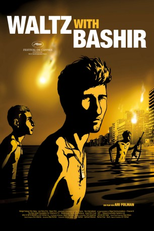

#6120 Waltz with Bashir
Auszeichnungen: für 1 Oscars nominiert 1 GoldenGlobes gewonnen
 
 IMDB-Wertung: 8.0 / 10
IMDB-Wertung: 8.0 / 10  Tomatometer: 96
Tomatometer: 96  Metascore: 0
Metascore: 0 
Als junger Mann war Ari Folman als Wehrpflichtiger der israelischen Armee im Libanonkrieg stationiert und wurde 1982 Zeuge des berüchtigten Massakers von Sabra und Schatila, bei dem christliche Milizionäre palästinensische Flüchtlinge töteten und die israelische Armee nicht eingriff. Jahre später hat er die Ereignisse verdrängt. Weil es dennoch in ihm brodelt, geht er gegen das eigene Vergessen vor. Mit Hilfe von Zeitzeugen versucht er sich zu erinnern und fördert dabei Erschütterndes zu Tage.
Jahr: 2008
Dauer: 90 Minuten
FSK: 12
Land: Israel Studio: Pandora FilmproduktionTonspuren:
Untertitel:
Auflösung: 1080p (1920x1080) Größe: 6031 MB
Genre: Drama, Krieg, Animation/Trick, Dokumentation, Geschichte, Biographie
Regisseur: Ari Folman
Drehbuch: Takashi Yamazaki
Soundtrack:
Darsteller:
- Ari Folman als Himself
- Mickey Leon als Boaz Rein-Buskila
- Ori Sivan als Himself - Interviewee
- Ronny Dayag als Himself - Interviewee
- Shmuel Frenkel als Himself - Interviewee
- Zahava Solomon als Herself - Interviewee
- Ron Ben-Yishai als Himself - Interviewee
- Dror Harazi als Himself - Interviewee
Datei: X:\HD-Trick\Waltz with Bashir (2008, FSK12, 1920x1080).mkv seit 03.05.2017
Festplatte: Kinder-Filme+Trick
 Es gibt insgesamt 28 Filme in der Gruppe 'HD-Trick'
Es gibt insgesamt 28 Filme in der Gruppe 'HD-Trick'